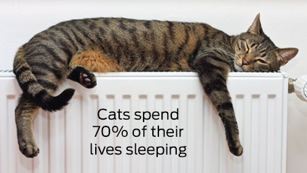
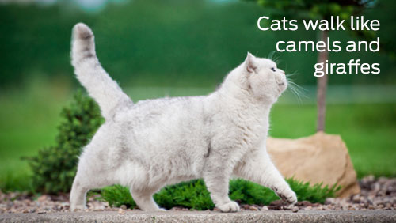

But in 2004, French archaeologists discovered a 9,500 yearoldcat grave in Cyprus.
1. The oldest known pet cat existed 9,500 years ago
This interesting fact about cats is guaranteed to wow at your next dinner party. Did you know that originally it was thought that Egyptians domesticated the cat? This makes this the oldest known pet cat and it predates Egyptian art about cats by over4,000 years!
2. Cats spend 70% of their lives sleeping
If you thought cats spent a lot of their lives sleeping, you’d be right. According to Veterinary Hub, Cats actually spend 70% of their lives sleeping, which works out to around 13-16 hours a day. It’s a cat’s life!
3. A cat was the Mayor of an Alaskan town for 20 years
An orange tabby cat called Stubbs was the mayor of Talkeetna, a small town in Alaska for 20 years! He had several uncontested elections and although he didn’t hold any legislative power, he was loved by locals and tourists alike.
4. The record for the longest cat ever is 48.5 inches
Domestic cats are usually considered to be quite small and dainty creatures. But did you know the world’s longest cat was a Maine Coon called Stewie, and was measured at 48.5 inches? Whereas, the record for the tallest cat belonged to Arcturus at a whopping 19.05 inches tall! Those are some big cats.
5. The richest cat in the world had £7 million
He gave his fortune to Blackie
The richest cat in the world according to Guinness World Records is Blackie. When his millionaire owner passed away he refused to recognise his family in his will and instead gave his 7-million-pound fortune to Blackie! We can’t believe that interesting cat fact!